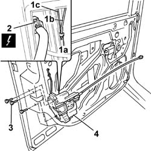
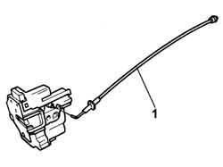

7005N20 front side door lock motor/catch assembly - rr with door panel and support frame removed
- Path
- Procedures > 70 FITTINGS > 7005 PASSENGER COMPARTMENT FRONT SIDE DOORS > 7005N front door central locking system > 7005N20 front side door lock motor/catch assembly - rr with door panel and support frame removed
- Kind
- repair procedure (removal / refitting; the operation number is the code)
- Applies to
- all engines; all production periods
- Interactive page
- https://sloeber94.github.io/elrnDB-fPnd/en/#/2753072
Applies to: all engines; all production periods
 Removing
Removing
 Refitting
Refitting5570T91 Front SIDE LOUDSPEAKER. (one), left or right - R.R. with door panel removed
7005A04 front side door water guard protection - r r or replace with door panel removed
7005E91 One front door ANTI-BREAK IN PARTITION, left or right - R.R. with door panel removed
7005D25 front door window rear guide - r r
1. Working from inside the door frame, disengage the retaining clips (1a), disconnect the opening link from the handle to the catch (1b) and the opening link from the lock to the catch (1c), lock side.
2. Disconnect the electrical connection.
 | Name | Connector |
|---|---|---|
2 | Left front door lock geared motor | N50 |
| Name | Connector |
|---|---|---|
2 | Right front door lock geared motor | N51 |
Disengage the internal handle link from the retaining clip on the door frame.
3. Undo the retaining bolts.
4. Remove the motor/catch assembly complete with link for opening the door.

Applies to: all engines; all production periods
1. Disengage the link for opening the door from its attachment on the motor/catch and remove it.

Applies to: all engines; all production periods
Refitting
RemovingCheck the condition of the door opening link and motor/catch and if necessary replace them.
Secure the door opening link to the attachment on the motor/catch.
Fit the motor/catch assembly complete with door opening link in its seating on the door frame.
Tighten the bolts.
Secure the door opening link to its clip on the door frame.
Working from inside the door frame, connect the opening link from the handle to the catch and the opening link from the lock to the catch, lock side, and engage the relevant retaining clips.
Connect the electrical connection.
| Name | Connector |
|---|---|---|
- | Left front door lock geared motor | N50 |
| Name | Connector |
|---|---|---|
- | Right front door lock geared motor | N51 |
Check the operation of the motor / catch assembly and the door opening link.
7005D25 front door window rear guide - r r
7005E91 One front door ANTI-BREAK IN PARTITION, left or right - R.R. with door panel removed
7005A04 front side door water guard protection - r r or replace with door panel removed
5570T91 Front SIDE LOUDSPEAKER. (one), left or right - R.R. with door panel removed
Topics linked from this page (4)
- 5570T91 Front SIDE LOUDSPEAKER. (one), left or right - R.R. with door panel removed
- 7005A04 front side door water guard protection - r r or replace with door panel removed
- 7005D25 front door window rear guide - r r
- 7005E91 One front door ANTI-BREAK IN PARTITION, left or right - R.R. with door panel removed